If you need to install the SETr package, you can use the following code.
# install.packages("remotes")
remotes::install_github("nerrscdmo/SETr")In this vignette, we will walk through how to use this package to write your own scripts for the import, analysis, and visualization of Surface Elevation Table (SET) data. The products from the original NERRS Science Collaborative-funded SETr project were designed for users who are not comfortable with R, and only want to have to hit a few buttons to run an entire workflow process. The current package is for people who are comfortable with R and want to modify or customize the outputs.
First, load the library.
1. Import data
The assumed format is the wide NERRS format, where each row represents readings from one SET arm on a given reading date (for a typical SET with 4 arm positions, there will be 4 rows per date), with one column for each of the 9 pins’ measurements, and one column for a QA/QC code per pin. See the Analysis Tools and Workflow Guide for more detail on this data format.
A data file is bundled with this package, and if you’d like to read it in you can use the following code. Otherwise, you can follow along the rest of this vignette using the built-in dataset example_sets_wide.
You could of course read in your own SET file.
in_file <- system.file("extdata", "example_wide.xlsx", package = "SETr")
dat <- import_NERRwide(in_file)
# or
# dat <- example_sets_wideLet’s examine this a bit.
This data frame has 228 rows and 26 columns. There are 3 unique SET IDs, and measurements across 5 unique years.
head(dat[, 1:9])
#> # A tibble: 6 × 9
#> set_id date year month day reserve arm_position arm_qaqc_code
#> <chr> <date> <chr> <chr> <chr> <chr> <chr> <chr>
#> 1 CLMAJ-1 2012-02-29 2012 2 29 GND 1L <NA>
#> 2 CLMAJ-1 2012-02-29 2012 2 29 GND 3R <NA>
#> 3 CLMAJ-1 2012-02-29 2012 2 29 GND 5R <NA>
#> 4 CLMAJ-1 2012-02-29 2012 2 29 GND 7L <NA>
#> 5 CLMAJ-1 2012-06-18 2012 6 18 GND 1L <NA>
#> 6 CLMAJ-1 2012-06-18 2012 6 18 GND 3R <NA>
#> # ℹ 1 more variable: pin_1_height_mm <dbl>Again, each row represents measurements from a single arm of a given SET on a given date. So for every sample date, at a SET using 4 arm positions, there are 4 rows of measurements. Each arm should contain 9 pins, and there are columns for pin height and QAQC information for each of the pins. Additionally, there is a column named arm_qaqc_code that can contain QAQC information for an entire arm. The full list of names is:
names(dat)
#> [1] "set_id" "date" "year" "month"
#> [5] "day" "reserve" "arm_position" "arm_qaqc_code"
#> [9] "pin_1_height_mm" "pin_2_height_mm" "pin_3_height_mm" "pin_4_height_mm"
#> [13] "pin_5_height_mm" "pin_6_height_mm" "pin_7_height_mm" "pin_8_height_mm"
#> [17] "pin_9_height_mm" "pin_1_qaqc_code" "pin_2_qaqc_code" "pin_3_qaqc_code"
#> [21] "pin_4_qaqc_code" "pin_5_qaqc_code" "pin_6_qaqc_code" "pin_7_qaqc_code"
#> [25] "pin_8_qaqc_code" "pin_9_qaqc_code"Selecting specific sheets
If you only want to work with one or two SETs, you can specify them.
dat_2sheets <- import_NERRwide(in_file, sheets = c("CLMAJ-1", "SPALT-1"))Verify that we only read in the two SETs of interest.
unique(dat_2sheets$set_id)
#> [1] "CLMAJ-1" "SPALT-1"Excluding sheets
Or, if you have an extra README or other sheet that does not contain SET data, you can (should!) exclude it. This is just a special case of selecting sheets, where you select everything but what you don’t want.
In a real case this might be a README, but here, we’ll exclude “SPALT-1” as an example.
shts <- readxl::excel_sheets(in_file)
shts_to_exclude <- "SPALT-1"
shts_to_keep <- shts[!(shts %in% shts_to_exclude)]
dat_excluded <- import_NERRwide(in_file, sheets = shts_to_keep)Verify.
unique(dat_excluded$set_id)
#> [1] "CLMAJ-1" "JURO_High-1"2. Reshape data into long format
The functions used in SETr rely on a long data format: a single pin reading per row. The function pivot_NERRwide() uses tidyr::pivot_longer() to swing both the height and QAQC column for each pin into a row. So now, instead of 4 rows per measurement date per SET, we have 36 rows per measurement date per SET: one row for every individual pin.
dat_long <- pivot_NERRwide(dat)Now we have fewer columns and many more rows. Let’s look at the beginning.
dim(dat_long)
#> [1] 2052 11
head(dat_long)
#> # A tibble: 6 × 11
#> set_id date year month day reserve arm_position arm_qaqc_code
#> <chr> <date> <chr> <chr> <chr> <chr> <chr> <chr>
#> 1 CLMAJ-1 2012-02-29 2012 2 29 GND 1L <NA>
#> 2 CLMAJ-1 2012-02-29 2012 2 29 GND 1L <NA>
#> 3 CLMAJ-1 2012-02-29 2012 2 29 GND 1L <NA>
#> 4 CLMAJ-1 2012-02-29 2012 2 29 GND 1L <NA>
#> 5 CLMAJ-1 2012-02-29 2012 2 29 GND 1L <NA>
#> 6 CLMAJ-1 2012-02-29 2012 2 29 GND 1L <NA>
#> # ℹ 3 more variables: pin_number <chr>, height_mm <dbl>, qaqc_code <chr>Some data files use cm rather than mm for their pin measurements, and these functions were written to allow either. The function height_to_mm() takes either input and returns a data frame with the required names for downstream functions. Even if your original data was in mm, you need to run this step because it changes the name of the pin height column. Notice the names before and after this step.
names(dat_long)
#> [1] "set_id" "date" "year" "month"
#> [5] "day" "reserve" "arm_position" "arm_qaqc_code"
#> [9] "pin_number" "height_mm" "qaqc_code"
dat_long <- height_to_mm(dat_long)
names(dat_long)
#> [1] "set_id" "date" "year" "month"
#> [5] "day" "reserve" "arm_position" "arm_qaqc_code"
#> [9] "pin_number" "qaqc_code" "pin_height"Excluding flagged readings
During data collection, individual pin readings are sometimes flagged and/or coded to indicate issues that might impact the data, for the user to be aware of. If you would like to exclude any specific information based on what is in the QAQC column for a pin, you can use the exclude_qaqc() function. This will set pin_height to NA for any reading whose QAQC code matches one you specify. The example dataset does not have any associated QAQC flags or codes, but the workflow would look like this:
dat_qaqc <- example_sets[1:5, ]
dat_qaqc$qaqc_code <- NA
dat_qaqc$qaqc_code[3] <- "LHE"
# all data
dat_qaqc
#> date set_id arm_position pin_number pin_height qaqc_code
#> 1 2010-06-01 SET1 a pin_1 100 <NA>
#> 2 2010-06-01 SET1 a pin_2 106 <NA>
#> 3 2010-06-01 SET1 a pin_3 118 LHE
#> 4 2010-06-01 SET1 b pin_1 110 <NA>
#> 5 2010-06-01 SET1 b pin_2 125 <NA>Note, a message is printed to the console telling you how many readings were changed to NA. It is in the printed code below between the function and the printed data frame.
# excluding suspect pin height
exclude_qaqc(dat_qaqc, codes = "LHE")
#> 1 reading(s) excluded (set to NA) based on QAQC code(s): LHE
#> date set_id arm_position pin_number pin_height qaqc_code
#> 1 2010-06-01 SET1 a pin_1 100 <NA>
#> 2 2010-06-01 SET1 a pin_2 106 <NA>
#> 3 2010-06-01 SET1 a pin_3 NA LHE
#> 4 2010-06-01 SET1 b pin_1 110 <NA>
#> 5 2010-06-01 SET1 b pin_2 125 <NA>Note, once SWMP-style flagging and coding is official, this will be a little more complex due to the use of different types of brackets for flags and codes. These are all special characters to programming languages and require what’s known as “escaping” so they are evaluated as characters.
3. Make graphs to help QA/QC data
3a. Graph raw data
Use this as a QA/QC step - make sure nothing looks wildly out of line with your expectations or your other data; if it does, go back to your field sheets and either verify or correct your spreadsheet.
plot_raw_pin() graphs a single SET, yielding one facet per arm position and one series of points and lines per pin on each arm.
plot_raw_pin(dat_long, "CLMAJ-1")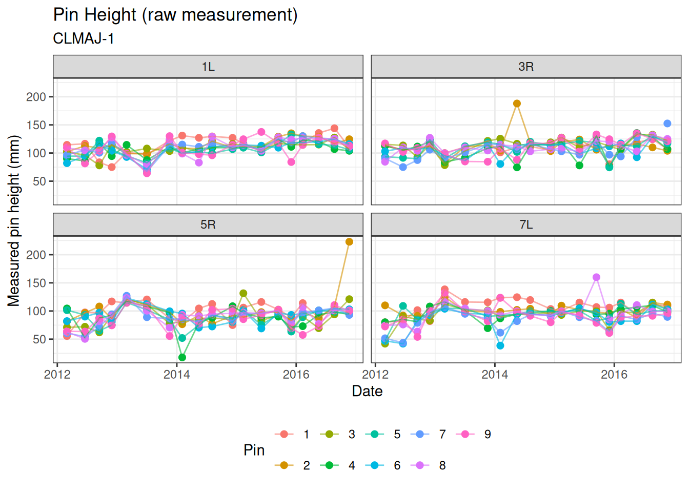
You could of course loop through all SETs in the data at once.
sts <- unique(dat_long$set_id)
for(i in seq_along(sts)){
print(plot_raw_pin(dat_long, sts[i]))
}
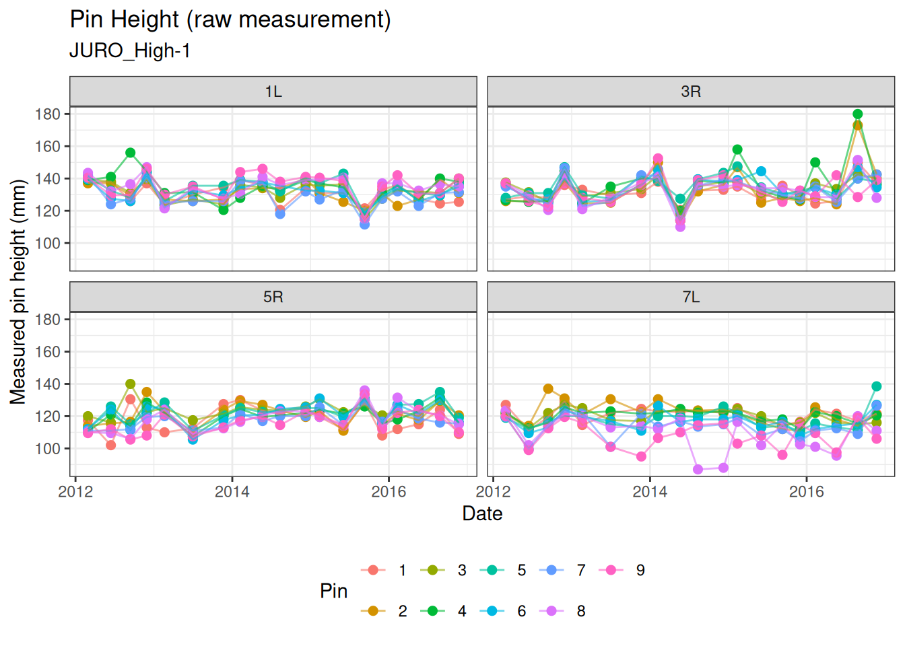
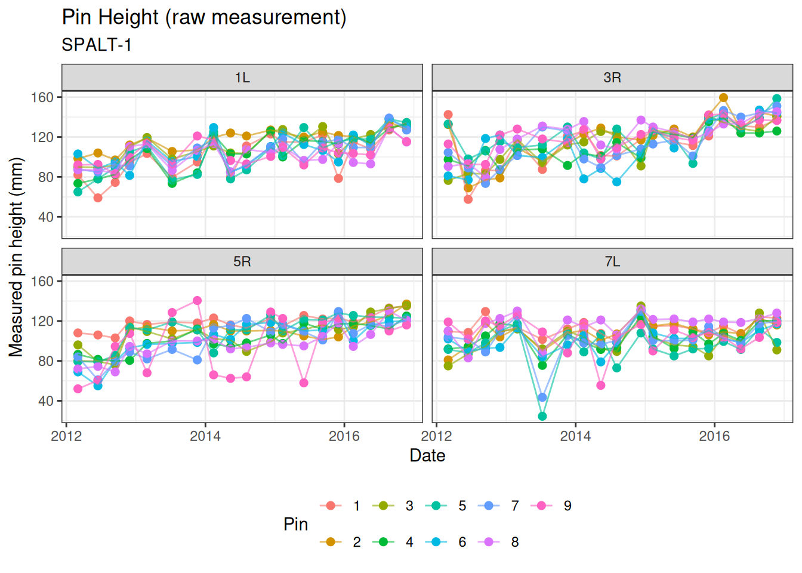
plot_raw_arm() graphs all SETs in the data, yielding one facet per SET, with each arm represented as a different color.
plot_raw_arm(dat_long)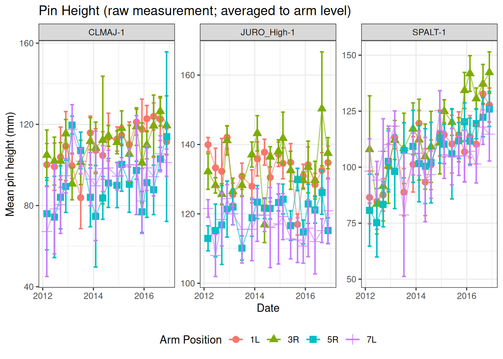
This can get a little crowded depending on how many SETs you have. You can change the number of columns with the columns argument. Let’s try both 2 columns and 1 column.
plot_raw_arm(dat_long, columns = 2)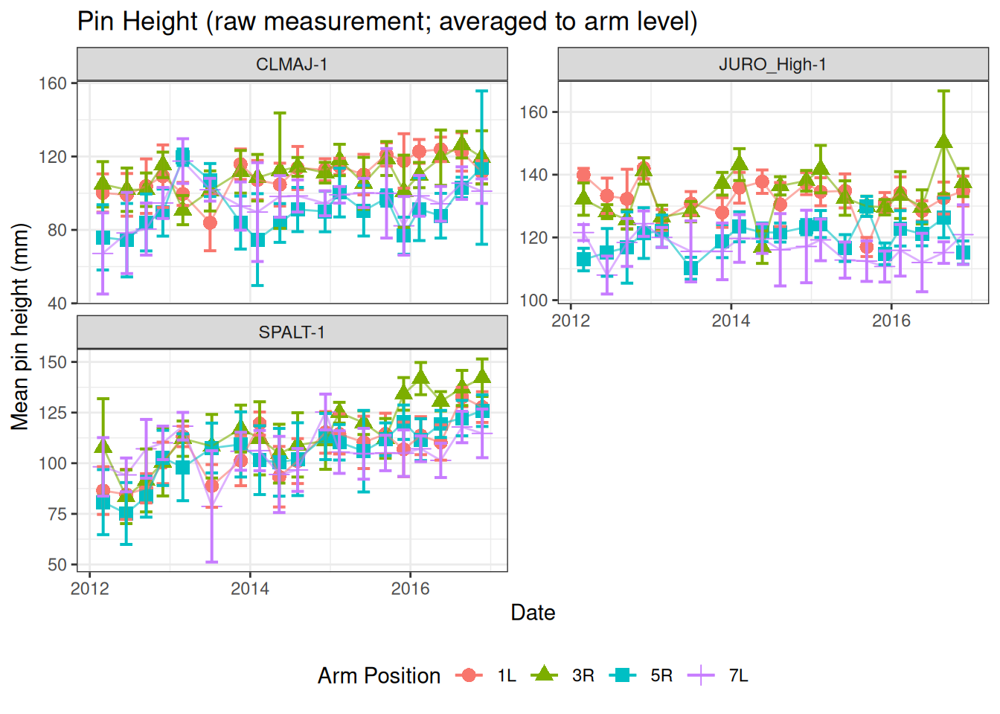
plot_raw_arm(dat_long, columns = 1)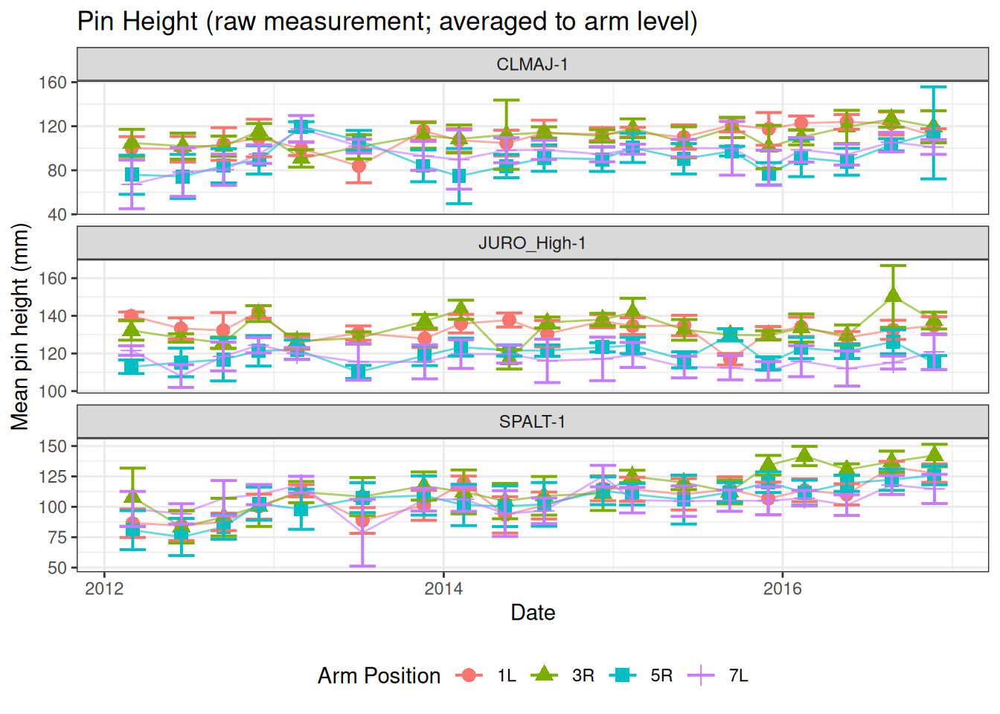
3b. Calculate and graph incremental change
A useful QA/QC step is making a graph of change since the previous reading - if there is a large difference, there could have been a large deposition or erosion event, or there could be a typo. Either way it is worth noticing! The plot_incr_*() functions put this information on a graph, with red lines at whatever threshold you specify. First, incremental change has to be calculated.
calc_change_incr() produces a list: one data frame each for incremental change by pin, by arm position, and by SET. I’ll illustrate what this looks like on a smaller example dataset:
example_incr <- calc_change_incr(example_sets)
str(example_incr)
#> List of 3
#> $ pin: tibble [36 × 6] (S3: tbl_df/tbl/data.frame)
#> ..$ date : Date[1:36], format: "2010-06-01" "2011-06-15" ...
#> ..$ set_id : chr [1:36] "SET1" "SET1" "SET1" "SET1" ...
#> ..$ arm_position: chr [1:36] "a" "a" "a" "a" ...
#> ..$ pin_number : chr [1:36] "pin_1" "pin_1" "pin_1" "pin_2" ...
#> ..$ pin_height : num [1:36] 100 105 112 106 113 120 118 120 124 110 ...
#> ..$ incr : num [1:36] NA 5 7 NA 7 7 NA 2 4 NA ...
#> $ arm: tibble [12 × 6] (S3: tbl_df/tbl/data.frame)
#> ..$ set_id : chr [1:12] "SET1" "SET1" "SET1" "SET1" ...
#> ..$ arm_position: chr [1:12] "a" "a" "a" "b" ...
#> ..$ date : Date[1:12], format: "2010-06-01" "2011-06-15" ...
#> ..$ mean_incr : num [1:12] NaN 4.67 6 NaN 4.33 ...
#> ..$ sd_incr : num [1:12] NA 2.52 1.73 NA 2.31 ...
#> ..$ se_incr : num [1:12] NA 1.45 1 NA 1.33 ...
#> $ set: tibble [6 × 5] (S3: tbl_df/tbl/data.frame)
#> ..$ set_id : chr [1:6] "SET1" "SET1" "SET1" "SET2" ...
#> ..$ date : Date[1:6], format: "2010-06-01" "2011-06-15" ...
#> ..$ mean_incr: num [1:6] NaN 4.5 5.5 NaN 4.5 5.5
#> ..$ sd_incr : num [1:6] NA 0.236 0.707 NA 0.236 ...
#> ..$ se_incr : num [1:6] NA 0.167 0.5 NA 0.167 ...On the dataset we’re using for the rest of this vignette, the year/month/day and some qa/qc columns carried through but are unimportant. So we didn’t need to see them above but are now applying the incremental change calculation to it.
dat_incr <- calc_change_incr(dat_long)Now we’ll do some graphing. Functions in this package focus on incremental change at the pin level - individual pins seem most susceptible to large changes - and averaged to arm position. You probably ought to investigate points falling outside your threshold of interest!
You could use the output from calc_change_incr() to make your own similar graphs averaged up to SET.
The general threshold of interest for incremental change seems to be 25 mm, so this is the default for where red lines appear in the plot functions.
At the pin level, you again get one facet per arm position, so you have to specify a single SET. Here is a graph of incremental change by pin, with the default threshold of 25. Note, you also have to specify the data frame within the list, not just the list output of calc_change_incr().
plot_incr_pin(dat_incr$pin, "CLMAJ-1")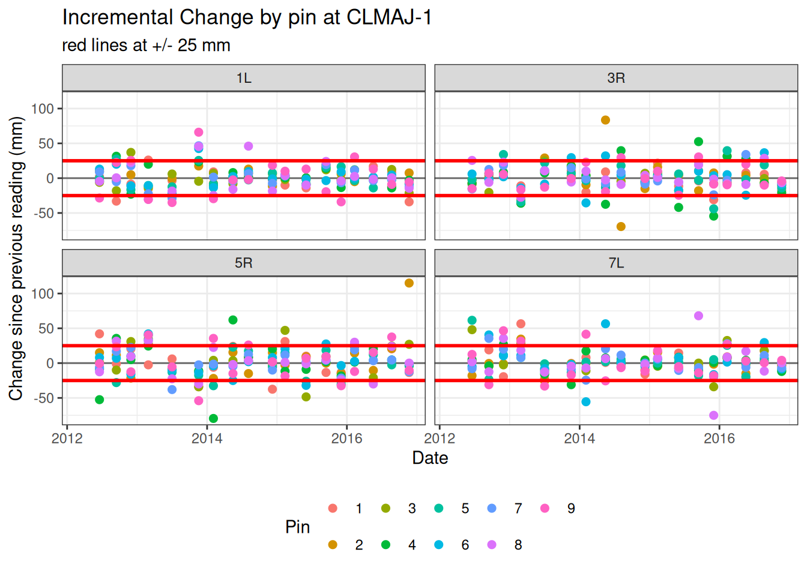
The threshold can be modified with the threshold argument:
plot_incr_pin(dat_incr$pin, "CLMAJ-1", threshold = 75)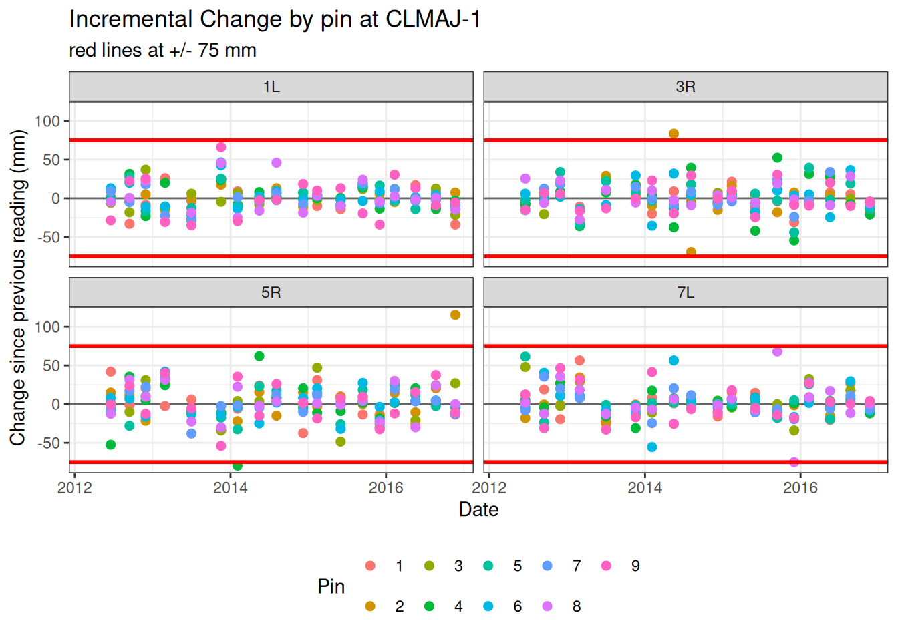
Graphs of incremental change by arm position can be produced for all SETs. As with the raw data graphing functions, you can change the number of columns; and as with plot_incr_pin(), you can change the threshold of interest:
plot_incr_arm(dat_incr$arm, threshold = 10, columns = 1)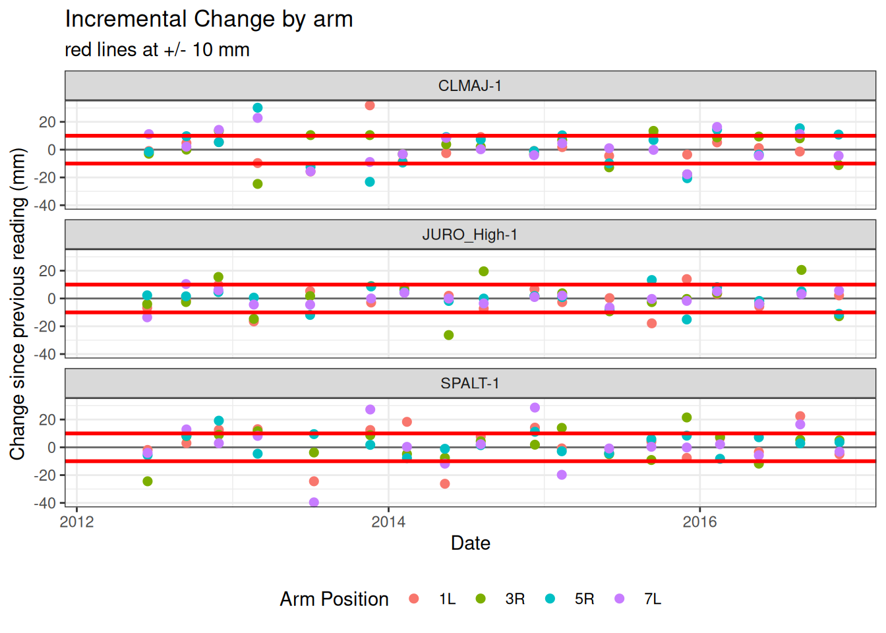
4. Calculate and graph cumulative change (change since first reading)
These graphs should look similar to those of raw readings, but all lines will start at 0. As with calc_change_incr(), calc_change_cumu() produces a list with data frames for pin, arm position, and SET. The plotting functions provided here are only for arm and SET, as they seem to be of more interest than that for individual pins.
Here is what output looks like for the simplified example data:
example_cumu <- calc_change_cumu(example_sets)
str(example_cumu)
#> List of 3
#> $ pin: tibble [36 × 5] (S3: tbl_df/tbl/data.frame)
#> ..$ date : Date[1:36], format: "2010-06-01" "2011-06-15" ...
#> ..$ set_id : chr [1:36] "SET1" "SET1" "SET1" "SET1" ...
#> ..$ arm_position: chr [1:36] "a" "a" "a" "a" ...
#> ..$ pin_number : chr [1:36] "pin_1" "pin_1" "pin_1" "pin_2" ...
#> ..$ cumu : num [1:36] 0 5 12 0 7 14 0 2 6 0 ...
#> $ arm: tibble [12 × 6] (S3: tbl_df/tbl/data.frame)
#> ..$ set_id : chr [1:12] "SET1" "SET1" "SET1" "SET1" ...
#> ..$ arm_position: chr [1:12] "a" "a" "a" "b" ...
#> ..$ date : Date[1:12], format: "2010-06-01" "2011-06-15" ...
#> ..$ mean_cumu : num [1:12] 0 4.67 10.67 0 4.33 ...
#> ..$ sd_cumu : num [1:12] 0 2.52 4.16 0 2.31 ...
#> ..$ se_cumu : num [1:12] 0 1.45 2.4 0 1.33 ...
#> $ set: tibble [6 × 5] (S3: tbl_df/tbl/data.frame)
#> ..$ set_id : chr [1:6] "SET1" "SET1" "SET1" "SET2" ...
#> ..$ date : Date[1:6], format: "2010-06-01" "2011-06-15" ...
#> ..$ mean_cumu: num [1:6] 0 4.5 10 0 4.5 10
#> ..$ sd_cumu : num [1:6] 0 0.236 0.943 0 0.236 ...
#> ..$ se_cumu : num [1:6] 0 0.167 0.667 0 0.167 ...Now we’ll apply this to the real example data and make a few graphs. As with the other plotting functions, you can change the number of columns to suit the number of SETs you are working with.
dat_cumu <- calc_change_cumu(dat_long)
plot_cumu_arm(dat_cumu$arm)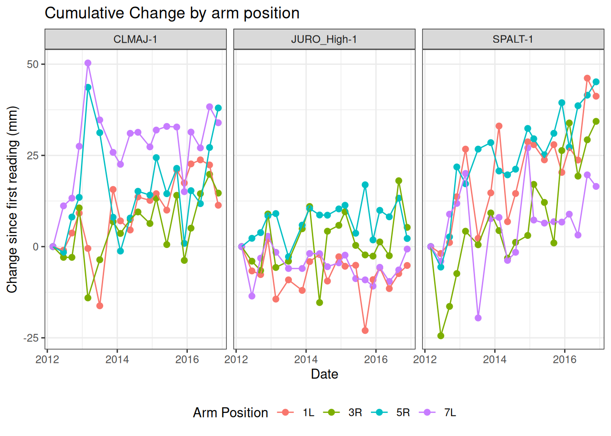
The graph of cumulative change by SET looks a bit nicer, because it is the simplest SET output to really share. The default graph includes a linear regression line following SET change. This can be turned off by setting smooth = FALSE, or made skinnier or thicker using the lty_smooth argument (default is 5).
plot_cumu_set(dat_cumu$set)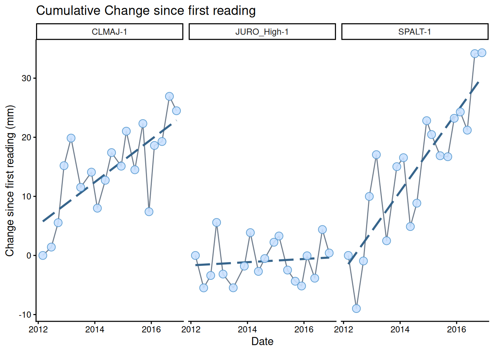
5. Calculate the rate of change through time
This step does not use functions from the SETr package, but rather from your favorite way to model data. In the SETr project, we followed Cahoon et al. 2019 and used linear mixed models. Lynch et al.’s (2015) protocols explore linear regression. Also see Russell et al. 2022 for some considerations of various approaches.
In general, for this step, you’ll want to generate a rate of change and a 95% confidence interval for that rate, for each SET.
6. Graph change through time
For simplicity, this graph and its variants will be illustrated with some made up data, rather than performing calculations on the example data.
Comparing those example rates to a local Sea Level Rise (SLR) rate of 3.5, with a 95% CI of 3.3-3.7: the latter values are all provided via argument; you have to pull them from elsewhere (we suggest using values from the nearest NWLON station):
plot_rate_comps(data = example_rates,
set_ids = set_id,
set_ci_low = ci_low,
set_ci_high = ci_high,
rates = set_rate,
comp1 = 3.5,
comp1_ci_low = 3.3,
comp1_ci_high = 3.7)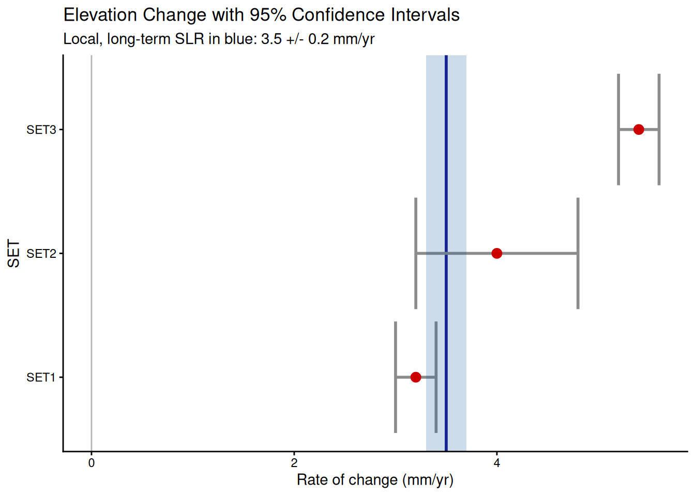
If you would like points to be colored by the dominant vegetation at the site, and assuming you have joined such information to your calculated rates, you can do it:
plot_rate_comps(data = example_rates,
set_ids = set_id,
color_by_veg = TRUE,
set_ci_low = ci_low,
set_ci_high = ci_high,
rates = set_rate,
comp1 = 3.5,
comp1_ci_low = 3.3,
comp1_ci_high = 3.7,
veg = veg)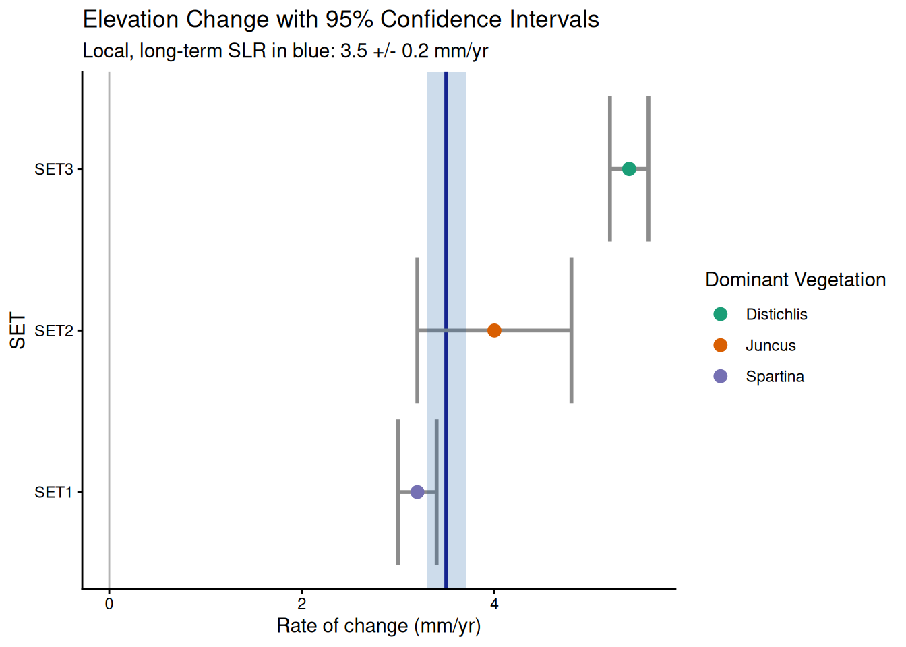
The default colors for the vegetation graph come from RColorBrewer’s Dark2 scale, which can handle up to 8 categories. If you have more categories, the color scale will automatically change to viridis:
# more than 8 vegetation categories -- veg_palette = "auto" (the default)
# switches to a viridis scale automatically instead of running out of Dark2 colors
example_rates_many_veg <- data.frame(
"set_id" = paste0("SET", 1:10),
"set_rate" = seq(2, 6, length.out = 10),
"ci_low" = seq(1.8, 5.8, length.out = 10),
"ci_high" = seq(2.2, 6.2, length.out = 10),
"veg" = paste0("Species", 1:10))
plot_rate_comps(data = example_rates_many_veg,
set_ids = set_id,
color_by_veg = TRUE,
set_ci_low = ci_low,
set_ci_high = ci_high,
rates = set_rate,
comp1 = 3.5,
comp1_ci_low = 3.3,
comp1_ci_high = 3.7,
veg = veg)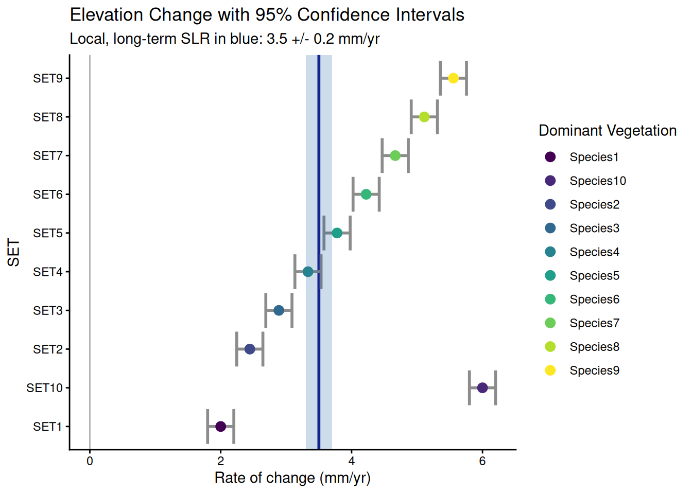
If you know your 19-year water level change rate, you can also add it. See this repository if you’d like some help getting the data and performing the calculations for your NWLON station.
plot_rate_comps(data = example_rates,
plot_type = 4,
set_ids = set_id,
set_ci_low = ci_low,
set_ci_high = ci_high,
rates = set_rate,
comp1 = 3.5,
comp1_ci_low = 3.3,
comp1_ci_high = 3.7,
comp2 = 5.5,
comp2_ci_low = 5.0,
comp2_ci_high = 6.0)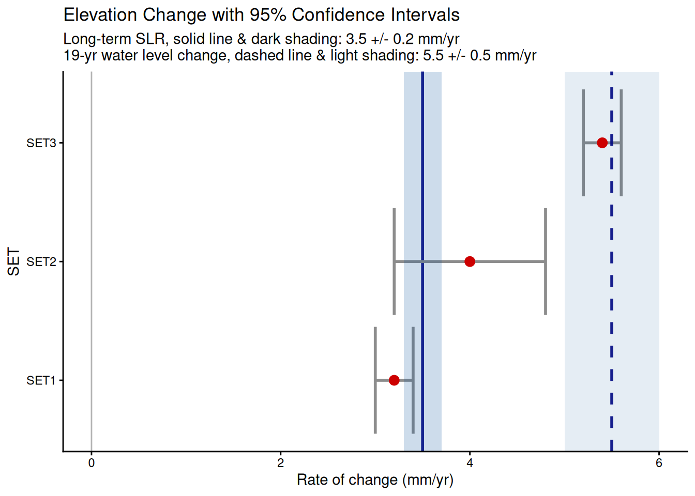